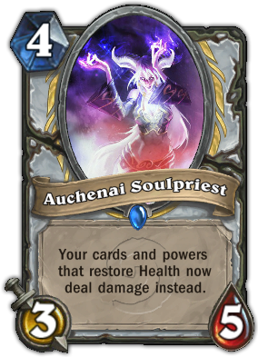
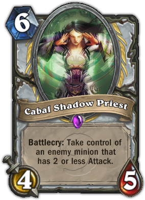
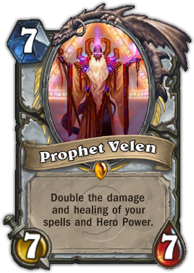

The Priest class is represented by Anduin Wrynn. While both Paladins and Priests draw their power from the Light, as a pure spell-caster Priest also has access to powerful shadow spells that iconically turn the enemies' power against them. Those two sides of the Priest are represented by the contrasting hero powers Lesser Heal and Mind Spike (while in Shadowform).
|  |  |  |